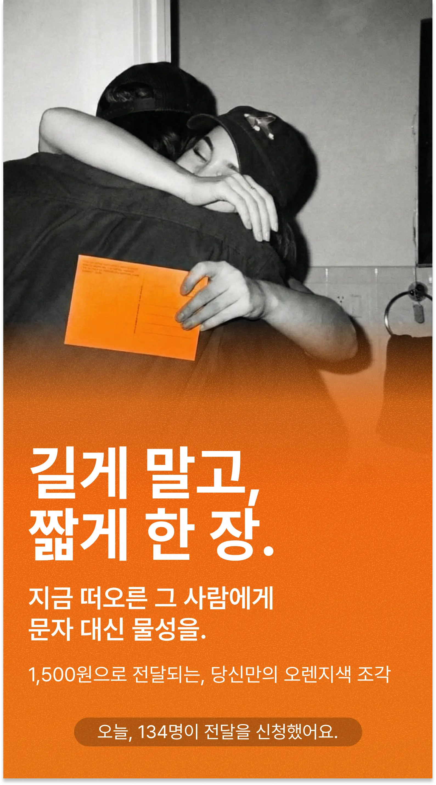
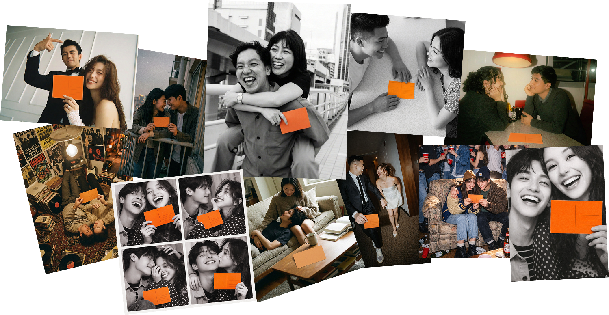
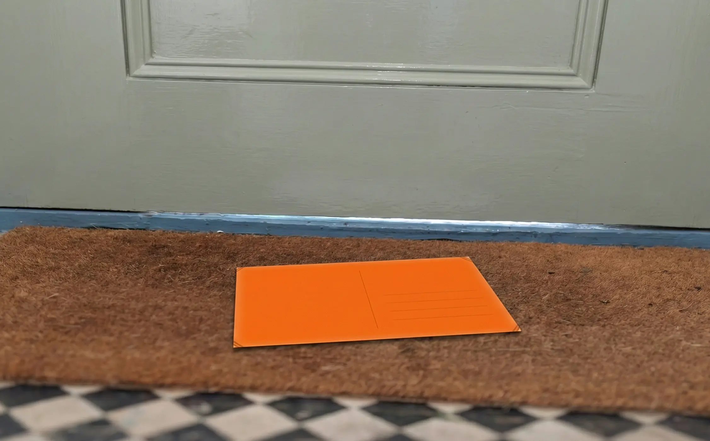
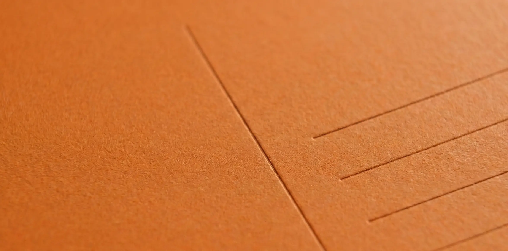
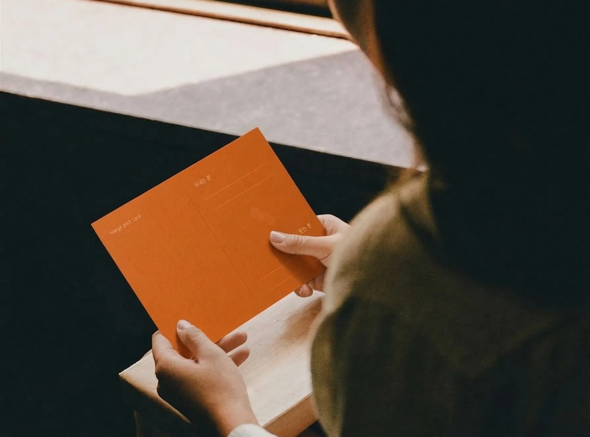
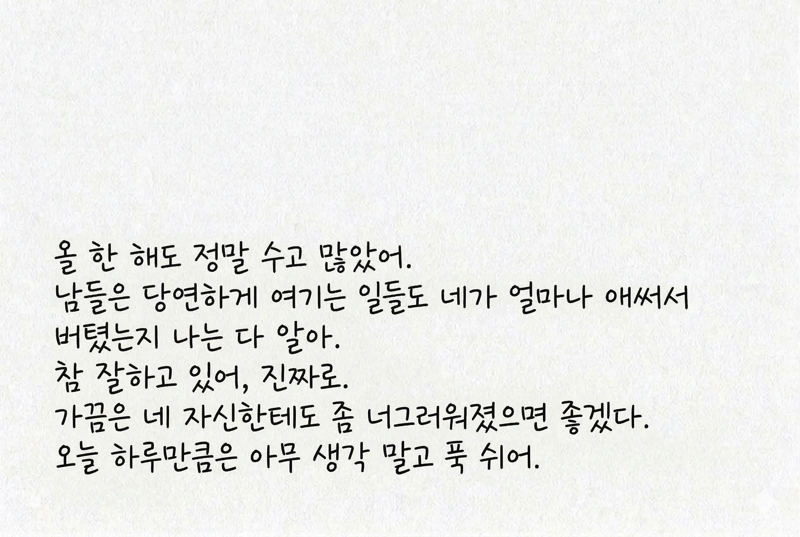
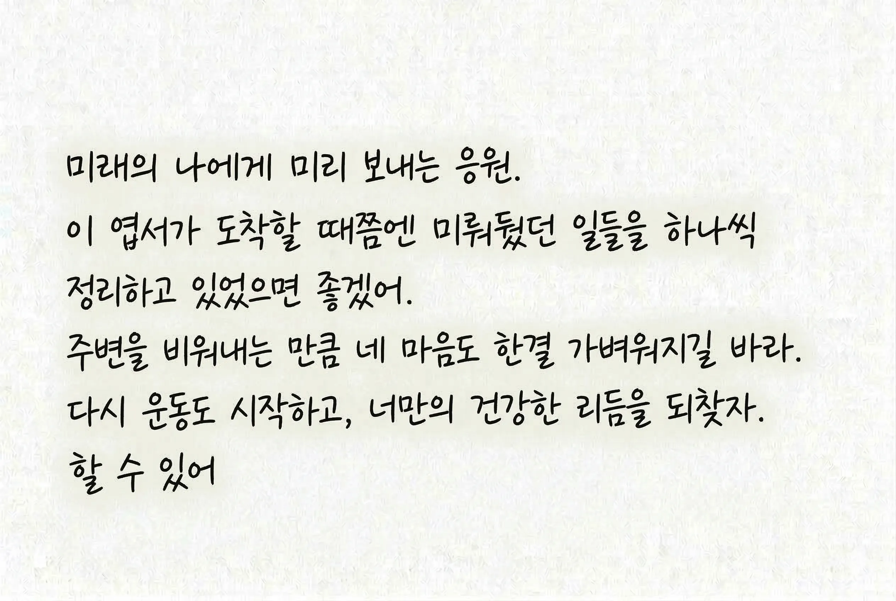
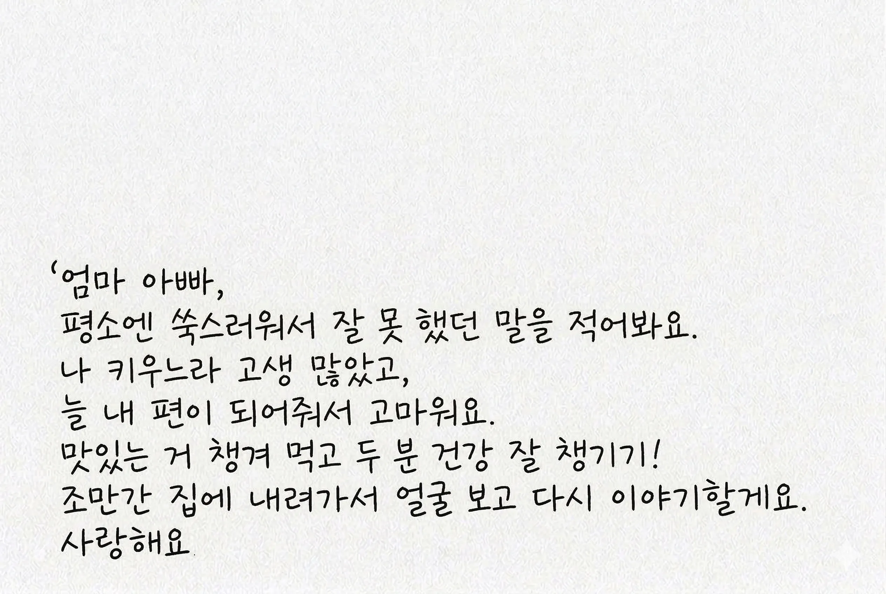
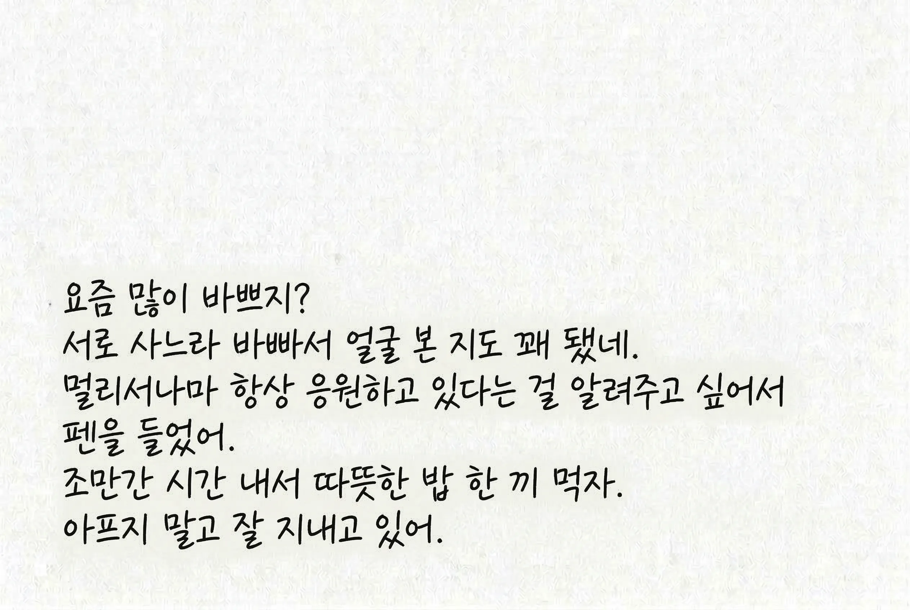

길게 말고,
짧게 한 장.
지금 떠오른 그 사람에게
문자 대신 물성을.
1,500원으로 전달되는, 당신만의 오렌지색 조각
현재 하루 50장만 발송됩니다.

타이핑만 하세요.
전달은 우리가 합니다
타이핑을 마치는 순간, 우리가 직접 오렌지 엽서로 인쇄해 상대방에게 온전히 배송합니다.


문자는 휘발되고,
종이는 남습니다.
수많은 알림 속에 휘발되는 메시지 대신, 묵직한 오렌지 매트지의 질감을 선물하세요. 시간이 지나도 남아있는 단 하나의 실체입니다.

말로 하기 쑥스러운 진심을
엽서에 담아 전달하세요.
평소에 하지 못했던 고마움, 미안함, 그리고 낯간지러운 응원들. 엽서라는 핑계를 빌리면 가장 무거운 진심도 가볍게 건넬 수 있습니다.



